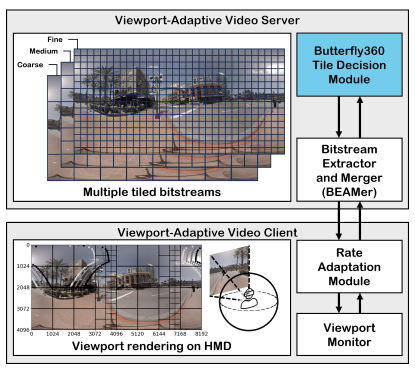

|
Soonbin Lee
I'm a Research Associate at Fraunhofer Heinrich-Hertz-Institut (HHI) in Berlin, Germany. I work in the multimedia communications group, which primarily focuses on immersive media technologies such as NeRF, 6DoF media compression and streaming system.
Before joining the HHI, I received B.S. degree from Gachon University and M.S. degree from Sungkyunkwan University (SKKU). I actively participated in the standardization of ISO/IEC 23090-12 MPEG immersive video (MIV), with Prof. Eun-Seok Ryu.
Most of my research focuses on processing and transmitting new media. Specifically, I'm interested in data compression and streaming for virtual reality.
Email /
Linkedin /
CV /
Google Scholar
|
|
News
- 11/2023 Our paper on NeRF compression has been appeared on arXiv.
- 09/2023 Our paper on 360 VR streaming is accepted to VCIP 2023 (Oral).
- 05/2023 Our paper on INR compression is accepted to SPL.
- 03/2023 Our paper on MIV streaming is accepted to NOSSDAV 2023.
- 02/2023 I will start my research at Fraunhofer HHI.
|
|
ECRF: Entropy-Constrained Neural Radiance Fields Compression with Frequency Domain Optimization
Soonbin Lee, Fangwen Shu, Yago Sanchez, Thomas Schierl, Cornelius Hellge
arXiv, 2023
|

|
Fine-grained Single-layer Tiling for Viewport-Adaptive 360-degree Video Streaming
Jong-Beom Jeong, Jun-Hyeong Park, Soonbin Lee, Eun-Seok Ryu
IEEE Visual Communications and Image Processing (VCIP), 2023
|
|
Implementing Partial Atlas Selector for Viewport-dependent MPEG Immersive Video Streaming
Soonbin Lee, Jong-Beom Jeong, Eun-Seok Ryu
ACM Workshop on Network and Operating System Support for Digital Audio and Video (NOSSDAV), 2023
|
|
Entropy-constrained Implicit Neural Representations for Deep Image Compression
Soonbin Lee, Jong-Beom Jeong, Eun-Seok Ryu
IEEE Signal Processing Letters (SPL), Vol. 30, pp. 663-667, May. 2023
|
|
Group-based Adaptive Rendering System for 6DoF Immersive Video Streaming
Soonbin Lee, Jong-Beom Jeong, Eun-Seok Ryu
IEEE Access, Vol. 10, pp. 102691-102700, Sep. 2022
|
|
Atlas Level Rate Distortion Optimization for 6DoF Immersive Video Compression
Soonbin Lee, Jong-Beom Jeong, Eun-Seok Ryu
ACM Workshop on Network and Operating System Support for Digital Audio and Video (NOSSDAV), 2022
|
|
DWS-BEAM: Decoder-Wise Subpicture Bitstream Extracting and Merging for MPEG Immersive Video
Jong-Beom Jeong, Soonbin Lee, Eun-Seok Ryu
IEEE Visual Communications and Image Processing (VCIP), 2021
|
|
Towards Viewport-dependent 6DoF 360 Video Tiled Streaming for Virtual Reality Systems
Jong-Beom Jeong, Soonbin Lee, Il-Woong Ryu, Tuan Thanh Le, Eun-Seok Ryu
ACM Multimedia (MM), 2020
|
|
Motion-constrained Tile Set based 360-Degree Video Streaming Using Saliency Map Prediction
Soonbin Lee, Dongmin Jang, Jong-Beom Jeong, Eun-Seok Ryu
ACM Workshop on Network and Operating System Support for Digital Audio and Video (NOSSDAV), 2019
|
Awards
- MCSL Outstanding Research Award, 2022
- SIGMM Student Travel Grants for ACM MMSys, 2022
- SKKU Graduate Student Research Paper Award, 2022
- IEEE Seoul Section Student Paper Contest Bronze Paper Award, 2021
- Gachon President Award for Research Excellence, 2019
|
Patents
- US 2023/0334706A1
- US 2022/0343545A1
- US 2022/0256131A1
- US 2022/0217314A1
- US 2022/0116578A1
- US 18/354,983
- US 18/338,613
- US 18/115,248
- KR 10-2500199
- KR 10-2484999
- KR 10-2412410
- KR 10-2356037
- KR 10-2209192
- KR 10-2023-0142819
- KR 10-2023-0077401
- KR 10-2023-0003994
- KR 10-2022-0170721
- KR 10-2022-0076272
- KR 10-2022-0014916
MPEG Standard Contributions
- "[MIV] On Delta QP for Additional View Atlases", document MPEG2022/m60377
- "[MIV] Geometry Packing Implementation in TMIV for Frame Packed Video", document MPEG2022/m59442
- "[MIV] Joint bit allocation for MIV with rate-distortion optimization", document MPEG2021/m58150
- "[MIV] Extraction and Merging on Frame Packed Video", document MPEG2021/m56591
- "[MIV] Basic View Packing with Screen Content Coding (SCC)", document MPEG2021/m55966
- "[MPEG-I VIsual] EE Results on Dense Light Field Video Compression using VVC”, document MPEG2021/m55965
- "[MPEG-I Visual] Report on Asymmetric Quantization on MIV", document MPEG2020/m55014
- "[MPEG-I Visual] Report on Dense Light Field Compression in VVC", document MPEG2020/m55013
- "On MCTS based tile extractor implementation", document MPEG2020/m53911
- "Group Tiling in TMIV", document MPEG2019/m51639
- "CE1: Viewport Tile Selector in TMIV for Viewport-dependent Rendering", document MPEG2019/m51638
- "CE3: Viewport-dependent Patch Grouping Using HEVC Tiles", document MPEG2019/m50818
|
|
{kind=link}